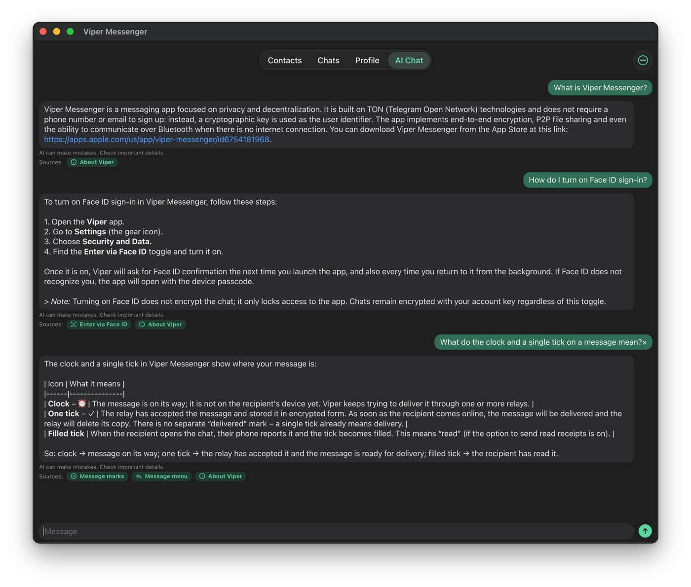

Viper 1.5.34
Viper Knowledge: a local AI that knows Viper and tells you where every answer comes from.
Notes for Viper 1.5.34
What changed since this post. Where the post and the app differ, the app is right.
- GPT-OSS 20B needs a Mac with Apple silicon and 24 GB of memory; iPhone and iPad run the smaller models.
- Contacts for AI: only names go to the model, never keys or messages.
Viper knowledge (GPT-OSS 20B on Mac)

The original screenshot, as the model answered in Russian: mac-ai-chat.jpg

Most AI assistants answer from whatever they memorized during training, and they make things up when they don't know. Viper AI works differently. Before every answer, Viper picks the right pages from its own knowledge and gives them to the model, right on your device:
- About Viper: what Viper is and how it protects you.
- Guides: the in-app guides for this very build, from keys to Bluetooth.
- What's new: the notes for the build you are running.
- My knowledge: your own notes, in Markdown, as long as you need.
The source of every answer is shown under it, one tap away. In Viper knowledge you can read every built-in source, copy or share it, and switch each one on or off. In My knowledge you add your own and share them in a chat, so a friend's AI can know it too. Nothing is sent anywhere: the knowledge, your question and the answer stay on your device.
Actions you confirm
- Ask the AI to write a message, create an event or a note. It prepares a draft, and nothing is sent until you tap Send.
- Contacts for AI: choose up to 50 contacts it can address, by the name you see in Contacts or by @username.
- Comment from AI: add a short comment or summary to your message, marked as written by Viper AI. Your own text is sent word for word.
Also new
- Markdown in AI answers: headings, lists, code and tables, and an Edit / Preview editor for your prompt and knowledge.
- Your base prompt: set how the AI answers and share it in a chat.
- A new AI guide: every page shows the real interface, from drafts to Viper knowledge.
- MedPsy 1.7B and 4B on iPhone and Mac: small health models for general questions in English. Not medical advice.
AI can make mistakes. Check important details.
Coming (announced, not shipped yet)
Features that run on your device are moving to Free: Save without Logo and the full chat backup with photos, videos and files. What the relay does stays in Viper Pro: Anon Mode, Hide Online Status and big files through the relay. File transfers will also be improved. Until that update ships, the page above describes the app as it is.
Text: the App Store “What's New” for Viper 1.5.34, released November 19, 2026. Screenshots: Viper 1.5.34 with sample data. All release notes